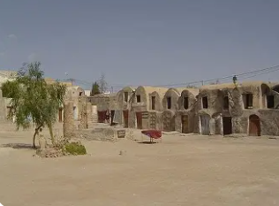
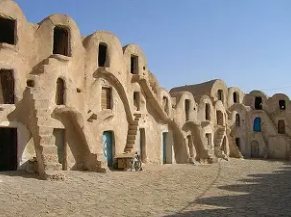
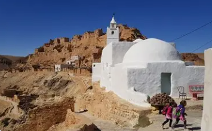
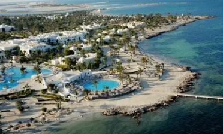
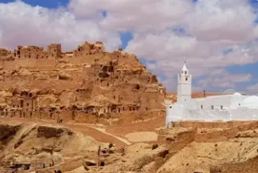

Terre des Ksour et de l'Île de Djerba

Médenine est un gouvernorat situé dans le sud-est de la Tunisie, entre mer et désert. Il englobe l'île paradisiaque de Djerba et le continent avec ses villages berbères fortifiés perchés sur les montagnes.
La région de Médenine, chef-lieu du gouvernorat, est célèbre pour ses ksour (greniers fortifiés berbères) spectaculaires et son architecture troglodyte unique. Elle représente le carrefour entre culture méditerranéenne et saharienne.
Le gouvernorat se distingue par l'île de Djerba (perle de la Méditerranée), ses villages berbères fortifiés comme Chenini et Douiret, ses ksour monumentaux, ses plages de sable blanc, et son patrimoine culturel amazigh exceptionnellement préservé.
Île paradisiaque aux plages de sable blanc et eaux turquoise. Villages blancs, synagogue de la Ghriba, artisanat traditionnel. Destination touristique majeure, douceur de vivre légendaire.
Grenier fortifié berbère monumental avec ghorfas (cellules voûtées) empilées sur plusieurs étages. Architecture défensive unique, décor de Star Wars. Symbole de l'ingéniosité amazighe.
Villages fortifiés spectaculaires : Chenini, Douiret, Guermessa perchés sur montagnes arides. Architecture en pierre, ksour accrochés aux falaises. Patrimoine amazigh vivant et authentique.
Tradition ancestrale de pêche au poulpe à Djerba avec casiers en terre cuite (gargoulettes). Spécialité culinaire locale, poissons frais et fruits de mer. Port de Houmt Souk animé.

Grenier fortifié berbère impressionnant avec plus de 6000 ghorfas (cellules voûtées) empilées sur 4-5 étages autour de cours intérieures. Architecture défensive ingénieuse du XVIIe siècle servant à stocker céréales et huile. Décor du film Star Wars, monument emblématique de l'architecture ksourienne.

Village berbère fortifié spectaculaire accroché à flanc de montagne à 500 mètres d'altitude. Maisons troglodytes creusées dans la roche, ksar blanc perché au sommet, mosquée aux sept portes. Paysages lunaires à couper le souffle, culture amazighe préservée. L'un des plus beaux villages de Tunisie.

Île mythique surnommée "l'île des Lotophages" dans l'Odyssée d'Homère. Plages paradisiaques, villages blancs traditionnels, menzels (fermes fortifiées), mosquées blanchies à la chaux. Synagogue de la Ghriba, l'une des plus anciennes au monde. Artisanat renommé : poterie, tissage, bijoux en argent.

Village berbère abandonné perché sur éperon rocheux avec habitations troglodytes en ruines. Ksar impressionnant, mosquée blanche suspendue, greniers fortifiés. Vue panoramique extraordinaire sur plaines désertiques. Décor de films, atmosphère mystique et hors du temps. Nouveau village construit en contrebas.